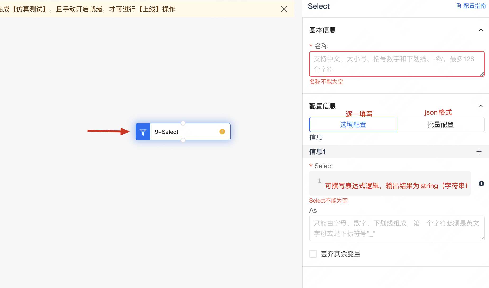
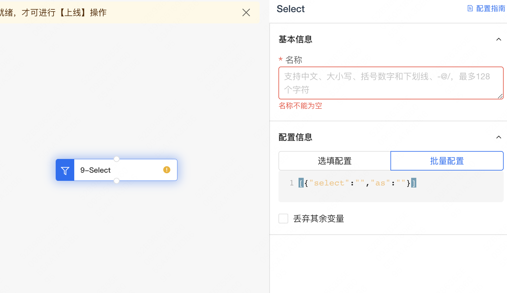

|
【入口】
Zeus-->策略部署-->画布
【基础配置】
- 点击右上角「新建画布」，在弹框中按要求填写完成「画布中文名称」和「画布英文名称」并保存后，自动跳转到画布配置页面；
- 左侧为工具栏，涵盖画布配置所需的所有支持的组件；
-
将select组件拖拽到画布中央，点击组件，右侧出现组件基本信息配置模块：
- 名称：支持中英文，不超过10个字，填写后画布中央的组件名称会变更，必填
-
配置信息：
- 支持选填配置和批量配置两种方式，其中选填配置，是逐一填写select...as...逻辑；批量配置是支持json串填写的批量配置模式
- select模块：可以输入topic中的字段（如果在kafka中被重命名过，则填写重命名的字段）、或者对topic中的字段进行计算，比如字段拼接、count计数等重新输出一个新的字段
- as：选填，取决于用户是否需要对select的对象进行重命名；
- 丢弃其余变量：单选，非必选，选择后，则select模块未选择的变量会在此环节丢弃
- 点击右上角「+」号可以新增一个select配置，也支持删除select配置
- 一个select配置智能重命名一个变量，如果涉及需要重命名多个变量的，需要通过新增select配置实现
|


[
{"select":"aviator1","as":"parameter1"},
{"select":"aviator2","as":"parameter2"},
{"select":"aviator3","as":"parameter3"},
{"select":"aviator4","as":"parameter4"},
{"select":"aviator5","as":"parameter5"}
]
|